My first morning in Shanghai, I had a breakfast tour booked!
I left the hotel early as I wasn't sure how much trouble I'd have figuring out the subways. It turns out it was quite straighforward! They have amazing signage and everything is in both Chinese and English.


Food Tour
My tour was a breakfast tour of the French Concession. When the China was forced to open its borders by Britain in the early 1900s, this neighbourhood was where most foreigners lived, so still has a lot of European architecture.
With the guide we tried:
- Scallion Pancake: flaky pancakes filled with scallion pieces and made with scallion juice in the dough. This was delicious and my favourite!
- Exploding Fish: very fresh, haha. They keep the fish in a tank in the back, scoop them out, kill them with a bat, and fry it in front of you. It's called exploding fish because the fish pops a little when it's deep fried. After being fried twice it's soaked in a sauce of your choosing.
- Soft Rice Coffee: milk and fermented rice at the bottom with a foamy coffee and chocolate powder on the top.
- Xiaolongbao: soup sumplings Simply delicious. It apparently takes 6 months to learn how to professionally wrap the dumplings.
- Shanghainese Pan-Fried Buns: steamed on top, crispy on the bottom, with a lightly fermented outside. The fermentation technique is a intangible cultural heritage.
- Eggy Roll: bread with egg inside.
- Chinese Chorus: like a churro but with sticky rice instead of dough.
- Coffee: this coffee is mixed with a bit of red wine giving it an...interesting flavor. We had this coffee at a dog cafe. Rachel was happy :).
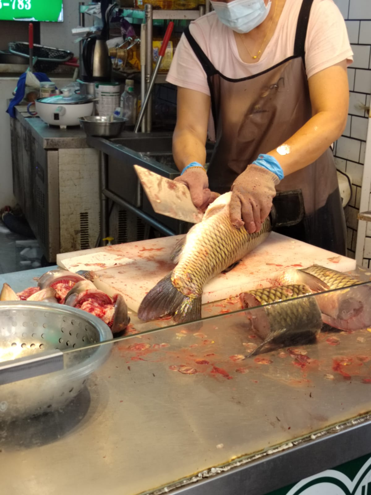

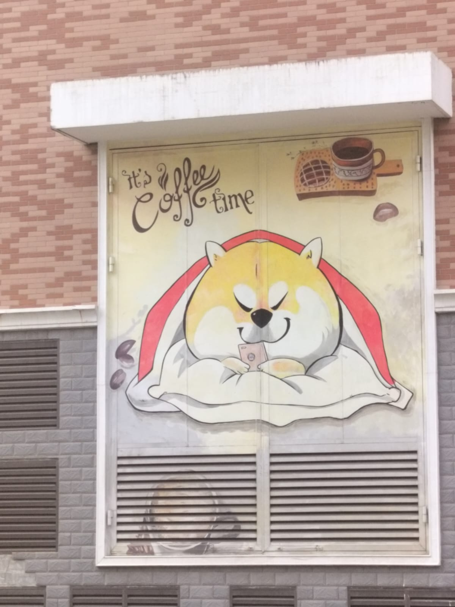
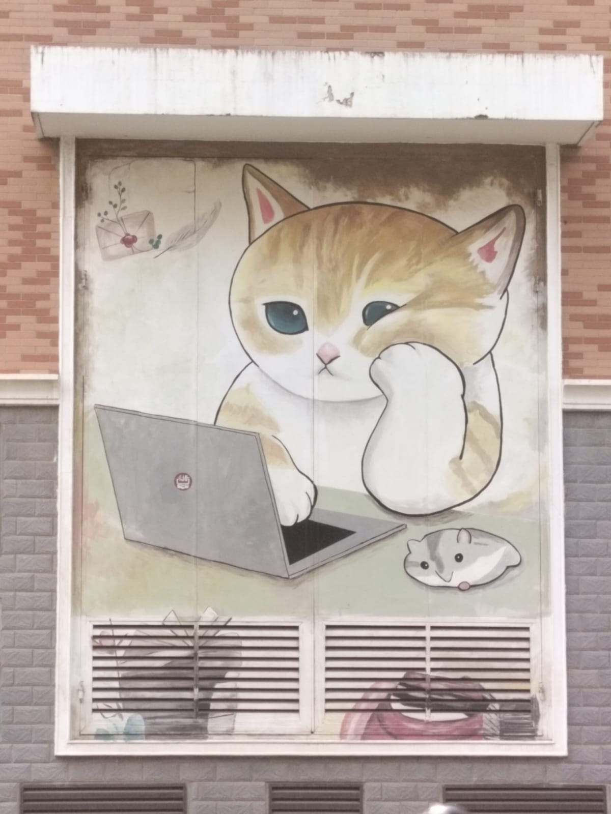
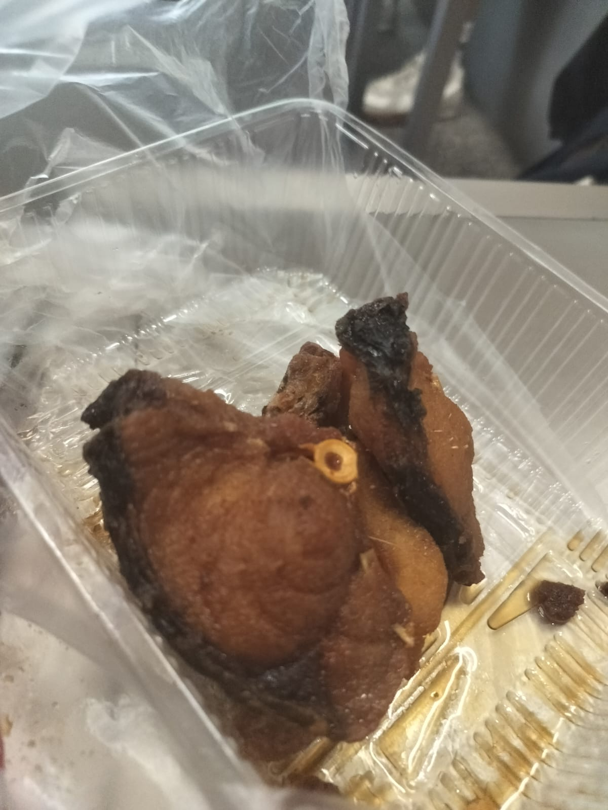
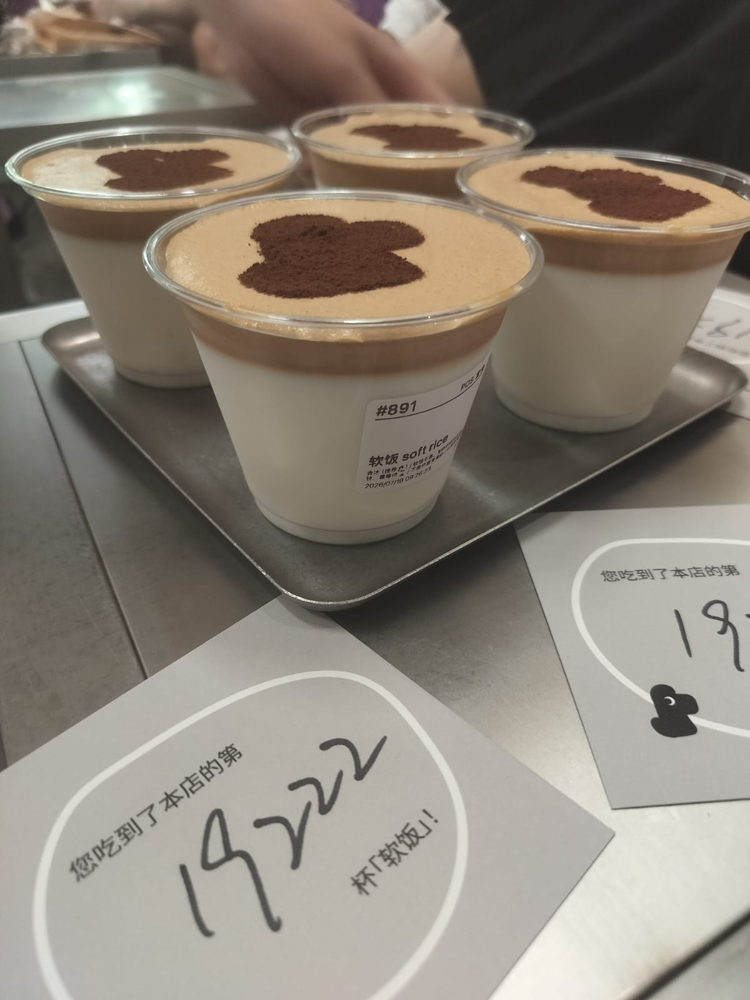

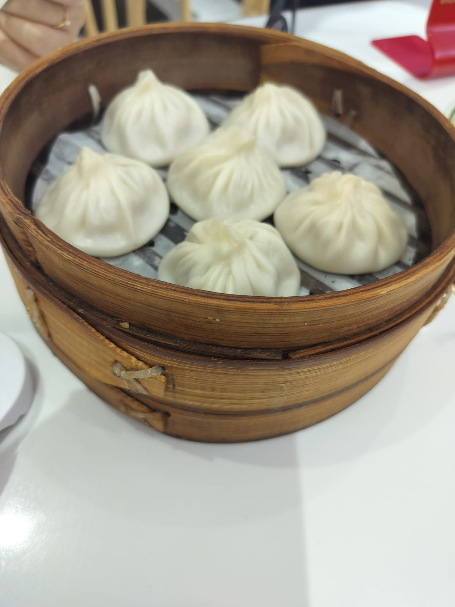
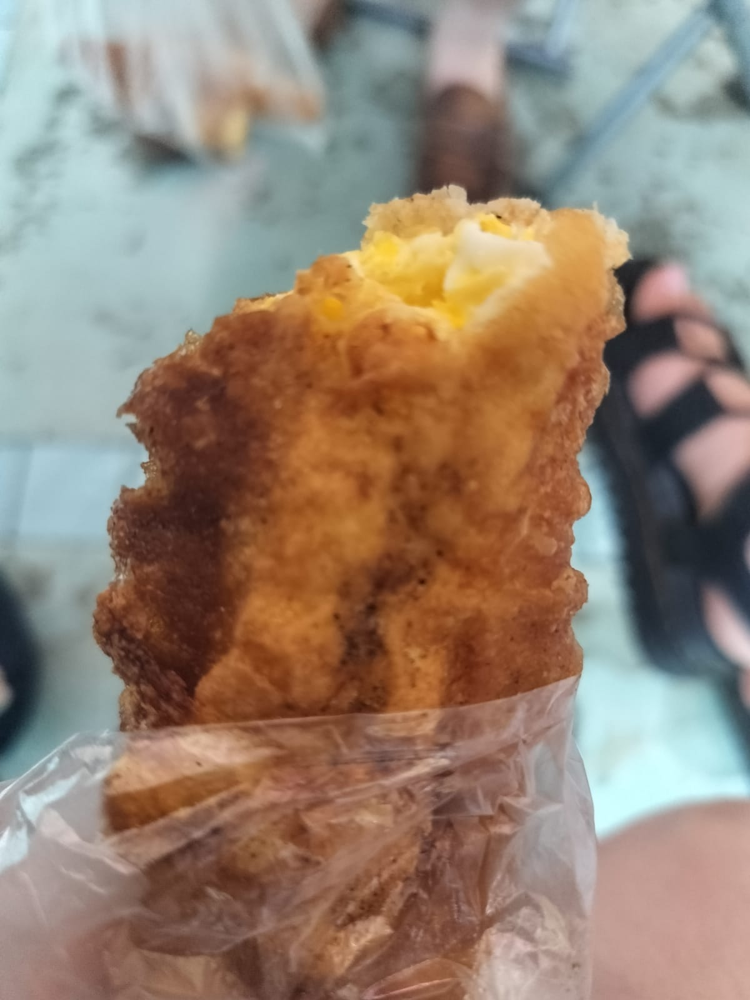
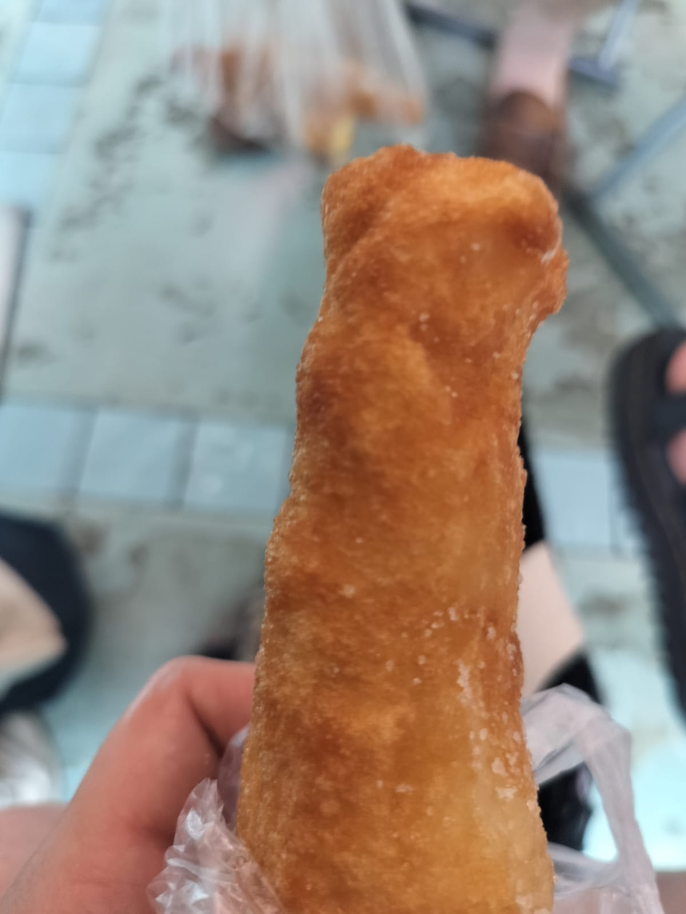
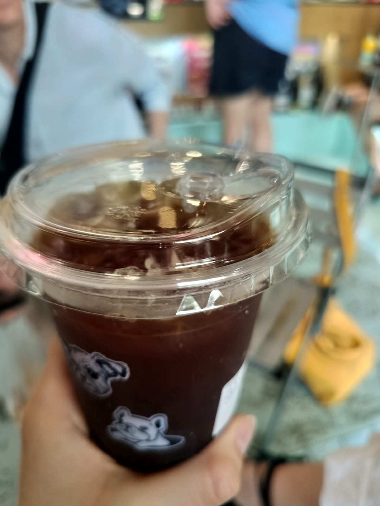
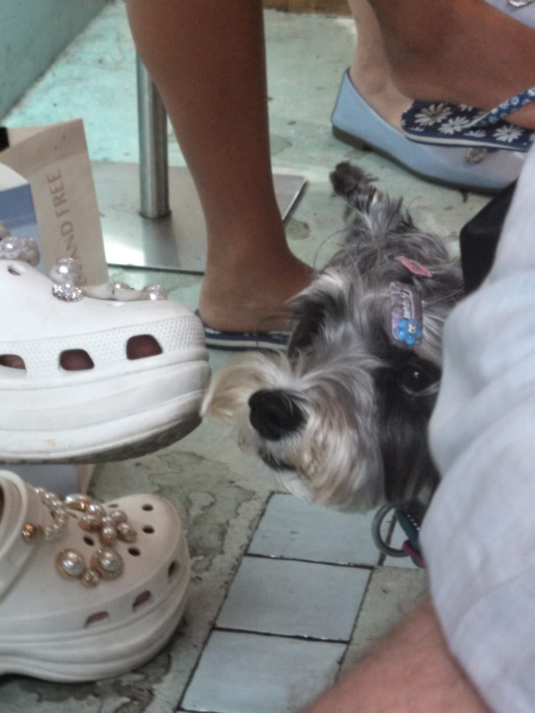
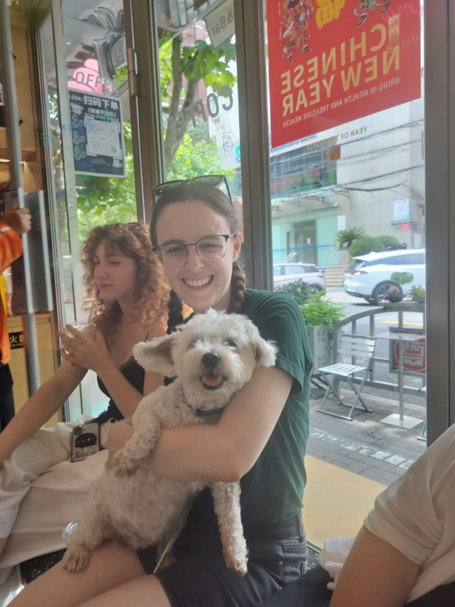
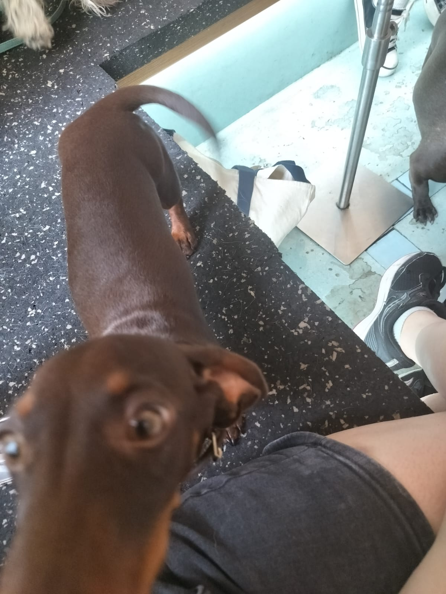
Exploring Shanghai


Ms Mary!
Ms Mary is a close family friend and practically my second mother. She just so happened to be in Shanghai the exact same days as me. She was travelling with a music group as part of a connection program between China and the US.
We had a lovely time chatting and catching up and I got to travel with her group to a glass museum.


Dinner
I was extremely tired and hungry, but went to Nanjing Road (Times Square of Shanghai) and found a Xiaolongbao restaurant. Felt sooo much better after the food.